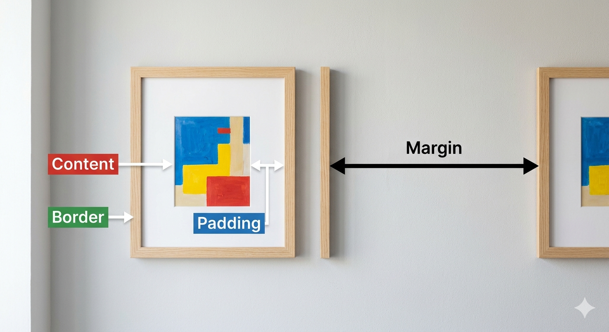
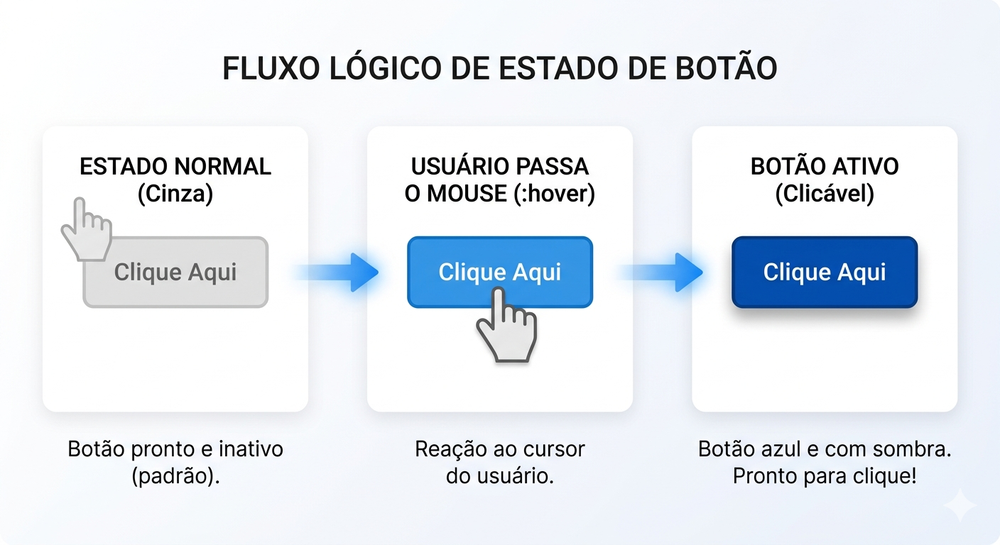
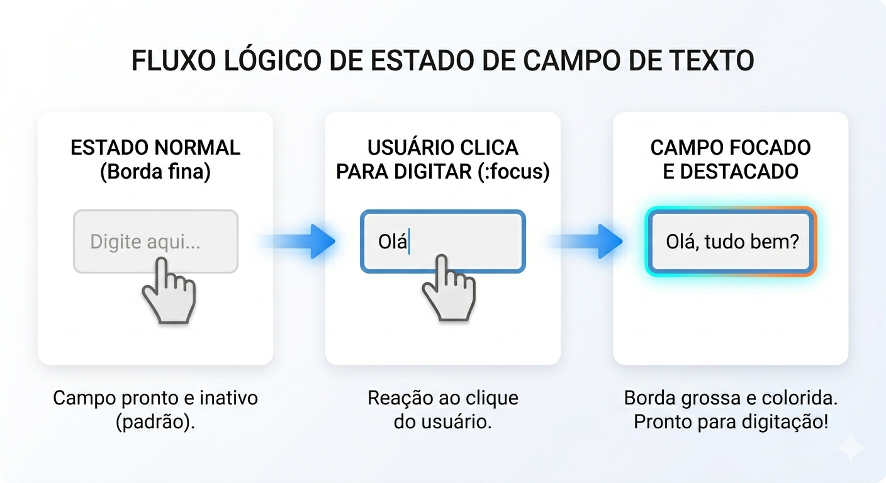
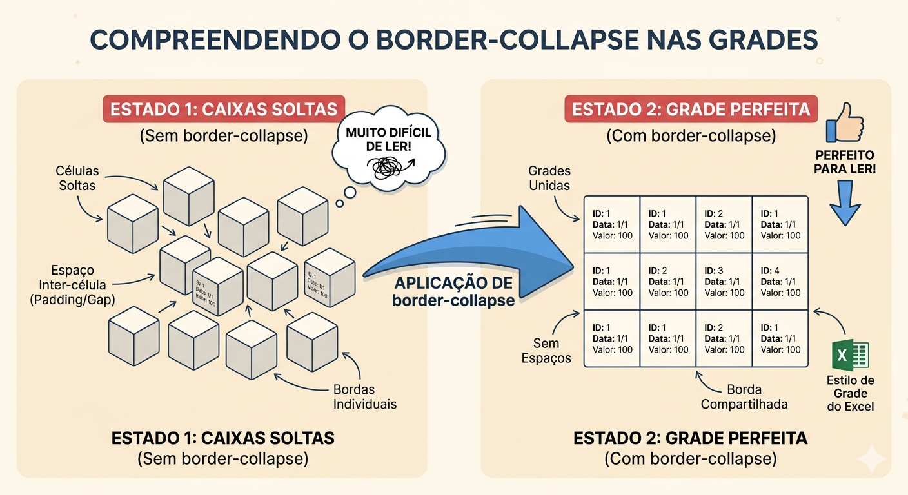

Aplicação prática do CSS (Modelo de Caixa, pseudo-classes e propriedades de tabela) para transformar estruturas HTML brutas em interfaces de entrada e visualização de dados acessíveis, interativas e visualmente agradáveis para o usuário.
Grandes plataformas como Nubank, Instagram e Spotify investem milhões em Experiência do Usuário (UX). Quando você entra em um aplicativo, a cor muda quando você passa o mouse, a borda do campo de texto brilha quando você vai digitar e as tabelas de faturas são fáceis de ler.
Isso não é apenas estética — é retenção de usuários. Formulários confusos e tabelas desorganizadas fazem com que os usuários abandonem o sistema. O segredo por trás dessa magia visual no front-end é o CSS estruturado.
Além disso, no mercado atual, usamos ferramentas de Inteligência Artificial Generativa para criar o esqueleto básico do HTML e CSS rapidamente, mas a habilidade essencial do desenvolvedor está em entender profundamente o "Modelo de Caixa" para corrigir problemas de layout que a IA não consegue resolver sozinha.
Fundamentos visuais do CSS.
O Box Model (Modelo de Caixa) é o conceito central do CSS onde absolutamente cada elemento HTML é renderizado pelo navegador como uma caixa retangular. Precisamos dominar isso porque é o que rege como as dimensões e os espaçamentos são calculados na tela.
Ele é composto por quatro camadas fundamentais:
Dominar o Box Model nos permite construir interfaces modulares e flexíveis, substituindo a "bagunça" de elementos colados por uma estrutura onde cada bloco respeita seu espaço.
Imagine um quadro na parede:

class="dashboard-container".50px aplica espaçamento externo no topo e na base; o valor auto nas laterais centraliza o bloco horizontalmente na página.1px de espessura, linha sólida, cor cinza clara.padding no código acima para 50px. O que acontece com o tamanho total da caixa?border para criar uma borda tracejada (dashed) da cor vermelha.margin para afastá-los em 40px.padding alto vs margin alto?Feedback visual imediato e interatividade.
Formulários não podem ser elementos estáticos. Nós utilizamos as Pseudo-classes do CSS para fornecer um feedback visual imediato ao usuário, transformando inputs brutos em elementos interativos. As pseudo-classes verificam o estado atual do elemento.
Por exemplo:
<input>) para digitar.É através dessa estilização que guiamos a atenção do usuário no fluxo de preenchimento, melhorando a acessibilidade e garantindo que ele saiba exatamente onde está a ação. Além disso, com o padding, evitamos que o texto digitado "encoste" na linha do campo.
Imagine um fluxo lógico de estado de um botão:
box-shadow) indicando que é clicável.
Para o campo de texto:


Este bloco trata do estado em que o usuário clica dentro de um campo de texto para começar a digitar.
:focus. Ela é acionada apenas quando o elemento <input> recebe o foco do teclado ou do clique.Este bloco define o comportamento visual quando o usuário passa o ponteiro do mouse sobre o botão.
.btn-ghost durante o estado da pseudo-classe :hover.:focus para um <textarea> que mude a cor do texto para azul.:hover do botão para que, além da sombra, ele fique ligeiramente transparente (dica: pesquise sobre opacity).outline: none do input focado em navegadores diferentes (teste no Chrome e Firefox)?disabled (pesquise a pseudo-classe :disabled).padding do input para 0px e tente digitar. Descreva o impacto na usabilidade.border-collapse e Zebra Striping.
Tabelas HTML puras (<table>, <tr>, <td>) são estruturalmente corretas, mas visualmente terríveis: os navegadores adicionam um "espaçamento duplo" entre as células por padrão.
Nós utilizamos a propriedade essencial border-collapse para unir essas bordas, criando uma grade unificada e profissional.
Além disso, ao lidarmos com relatórios longos ou listas de clientes, a leitura se torna cansativa. Aplicamos o conceito de "Zebra Striping" (linhas zebradas) usando a pseudo-classe :nth-child(even) para alternar as cores do fundo de cada linha, facilitando o escaneamento visual da informação.
Pense numa planilha: se cada célula fosse uma caixinha solta flutuando com um pequeno espaço entre elas, seria horrível de ler.
Células soltas com espaço duplo entre elas. Bordas individuais por célula. Muito difícil de ler.
Grades unidas. Sem espaços entre células. Borda compartilhada. Estilo profissional.

border-collapse: collapse;. Recarregue a página e observe as bordas duplas.text-align) da célula de cabeçalho (th) para center.even (par) para odd (ímpar) e veja o resultado.text-transform: uppercase; ao cabeçalho.border-radius à tabela inteira. Desafio oculto: você precisará descobrir por que o radius pode bugar se o collapse estiver ativado e como resolver!Esclarecendo pontos comuns sobre CSS.
<span> ou <a>). Margens verticais só funcionam em elementos do tipo bloco (display: block ou inline-block).padding afasta o conteúdo da parede de dentro da sua casa. A margin afasta a sua casa da casa do vizinho. Se o seu elemento tiver um fundo colorido, o padding expande essa cor, a margin não.width (largura) menor que 100% para a tabela e aplique a regra margin: 0 auto;. O navegador dividirá o espaço que sobrar igualmente na esquerda e na direita.outline (ex: outline: none;) na pseudo-classe :focus.Desafio da Interface Profissional.
Descrição: Crie a div principal que envolverá todo o conteúdo. Utilize o Box Model para definir uma largura fixa, centralizá-la na tela com margin e aplicar uma box-shadow para dar profundidade e destaque visual.
Entrega: Código CSS do seletor .dashboard-container aplicado à div principal.
Descrição: Organize os campos do seu formulário (label e input) dentro de divs com a classe .form-row. Utilize a pseudo-classe :nth-child(even) para alternar a cor de fundo dessas linhas, melhorando a organização visual do formulário.
Entrega: Regra CSS para .form-row:nth-child(even).
Descrição: Aplique um padding generoso (pelo menos 12px) em todos os campos de entrada (input e textarea). Isso evita que o texto encoste nas bordas e torna o campo mais fácil de clicar em dispositivos móveis.
Entrega: Propriedade padding aplicada aos seletores de entrada no CSS.
Descrição: Utilize a pseudo-classe :invalid nos inputs. Configure o HTML com o atributo required e faça com que o CSS mude a cor da borda para vermelho caso o campo esteja vazio ou com dados incorretos.
Entrega: Trecho de código CSS para input:invalid.
Descrição: Estilize o botão de cadastro com fundo transparente e borda verde. Use a pseudo-classe :hover para inverter as cores (fundo verde e texto branco) e adicione uma transition para que a mudança seja suave.
Entrega: Estilos CSS para button e button:hover.
Descrição: No campo de descrição (textarea), remova o contorno padrão do navegador usando outline: none. Crie uma estilização para a pseudo-classe :focus que destaque apenas a borda inferior do campo quando ele for clicado.
Entrega: Código CSS focado no textarea:focus.
Descrição: Configure a tabela de produtos utilizando a propriedade border-collapse: collapse. Isso eliminará o espaço duplo entre as células, criando uma grade única, limpa e profissional.
Entrega: Propriedade border-collapse aplicada ao seletor table.
Descrição: Aplique a técnica de "Zebra Striping" na tabela de produtos. Utilize :nth-child(even) nas linhas (tr) para que as linhas pares recebam uma cor de fundo cinza claro, facilitando a leitura de dados tabulares.
Entrega: Regra CSS para tr:nth-child(even) da tabela.
Descrição: Adicione um feedback visual para o usuário ao navegar pela tabela. Use a pseudo-classe :hover nas linhas (tr) para mudar a cor de fundo e transformar o texto em negrito (font-weight: bold) ao passar o mouse.
Entrega: Código CSS para o efeito tr:hover.
Descrição: Crie classes CSS chamadas .ativo e .inativo para estilizar elementos <span> dentro da coluna de status. Use cores de fundo distintas (verde e vermelho), texto branco, padding pequeno e border-radius para criar etiquetas (badges).
Entrega: Classes CSS de status aplicadas aos elementos da tabela.
Lembra do sistema backend em Python que estamos planejando e modelando ao longo do curso? Todas aquelas funções de salvar_cliente e consultar banco de dados não podem ser apresentadas em uma tela preta de terminal para o cliente real.
Na próxima aula, vamos desmistificar o Flask e entender que rotas nada mais são do que funções que "escutam" o navegador e retornam arquivos HTML. Aprenderemos a configurar seu próprio servidor web em Python utilizando o decorador @app.route para conectar URLs às suas páginas.
O desafio prático? Fazer com que o endereço localhost:5000/inicio renderize com sucesso o HTML que criaremos juntos em sala!